ICU TaskLog — Visual Guide
Step-by-step screenshots of every screen, branch, and scenario • Nurse flow + Head-nurse flow + Public pages
1. Login & Authentication
Login page — fast demo buttons

One-tap Enter as Nurse (Amina · 1111) and Enter as Head nurse (Layla · 9999) buttons for the demo. Manual username/PIN form and self-registration are also available.
Fast nurse login redirect
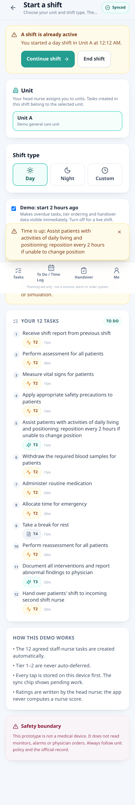
One-tap nurse login lands the user directly on the shift-start screen with the active session.
2. Nurse: Shift Start
Unit selection
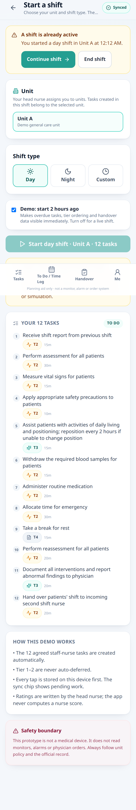
The nurse chooses their assigned head-nurse unit. Tasks created in this shift belong to the selected unit. If no unit is assigned, the nurse is asked to contact the head nurse.
Unit selected + backdate option

Unit A is selected, enabling the start button. The Demo: start 2 hours ago checkbox backdates the shift so overdue states and tier ordering are visible immediately for teaching/demo. Turn it off for a live shift.
3. Nurse: Tasks Queue (/tasks)
Task queue — open filter
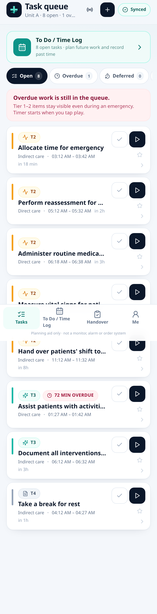
Tier-sorted task queue (T1/T2 first). Each task shows title, tier, expected minutes, and planned window computed from shift start. Filter buttons: Open, Overdue, Deferred, Done.
Active timer (task in progress)
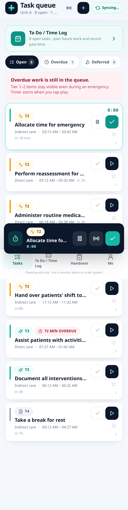
Starting a task shows a sticky active timer bar. Duration is computed from stored timestamps, not in-memory counters.
Task finished
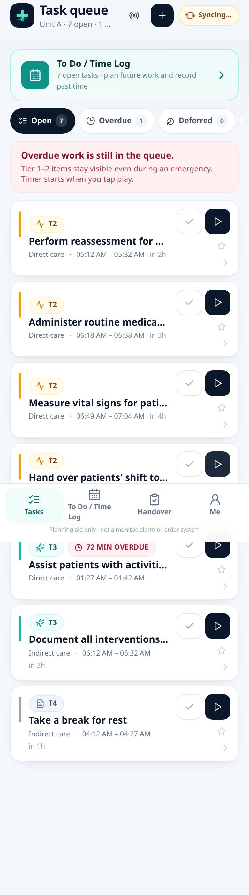
Finishing a task records completion time from the stored timestamp and moves it to Done.
Quick add task
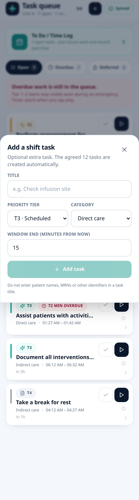
Quick-add sheet creates a custom shift-level task. The title is free text — the UI warns against entering patient names or identifiers.
Filter: Overdue
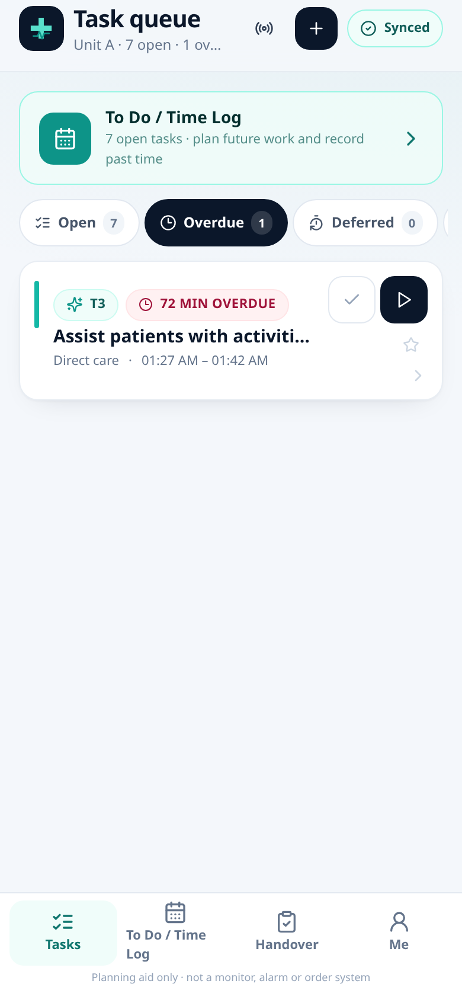
Overdue view shows tasks whose planned end has passed while still not done. Tier 1–2 tasks are never auto-deferred.
Filter: Done
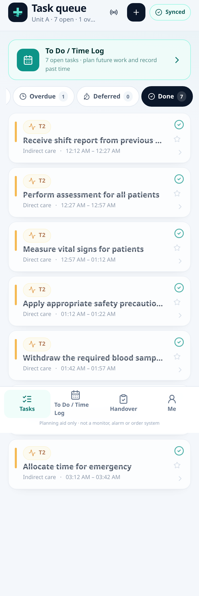
Done view shows completed and missed tasks with timestamps.
Filter: Open (back to default)
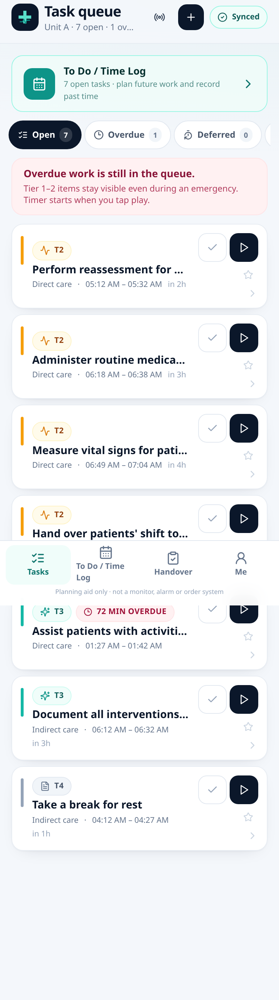
Returning to the Open filter shows only planned/in-progress/paused tasks — the active work queue.
4. Nurse: Plan — To Do / Time Log (/plan)
To Do / Time Log board
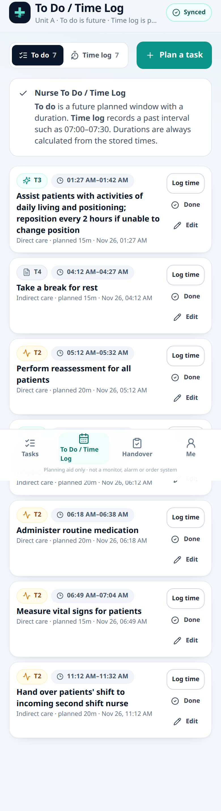
To Do is future work (create planned tasks). Time Log is past work (record time intervals from stored start/end times). Duration is computed from stored timestamps.
Edit task / add note modal
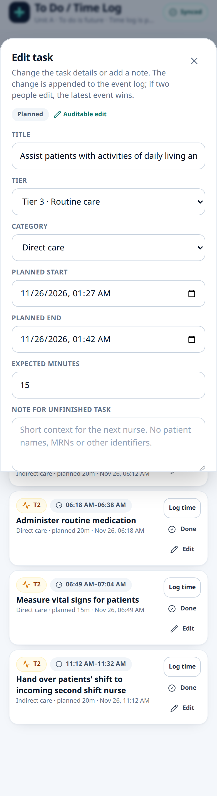
Editing an unfinished task or adding a note appends a TASK_EDITED audit event. Done/missed tasks are locked (409). The note carries through to handover and the head-nurse timeline.
5. Nurse: Shift-Level Handover (/handover)
Handover draft (no prior shift)
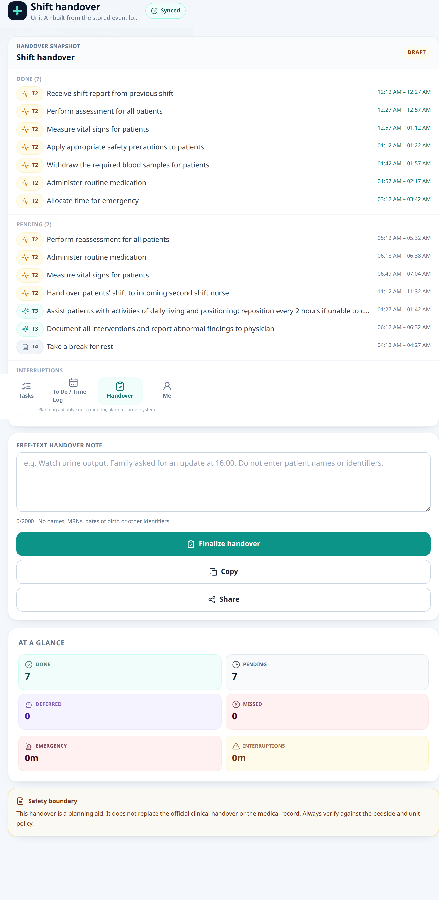
One shift-level handover covering all tasks (synthetic id shift). Built from the stored event log — nothing is invented.
Finalize handover dialog
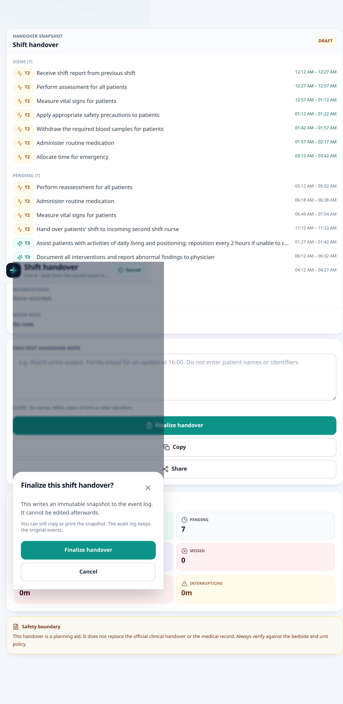
Confirmation dialog before finalizing. The snapshot becomes immutable — it cannot be overwritten, only copied or printed.
Handover finalized
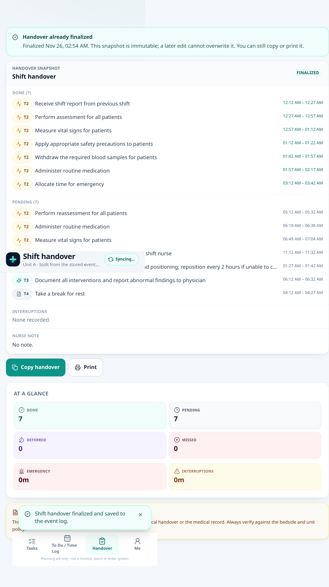
Finalized handover shows a timestamp, copy/share/print options, and a disclaimer that it does not replace the official clinical handover.
6. Nurse: Me / Alarm Settings (/me)
Alarm settings
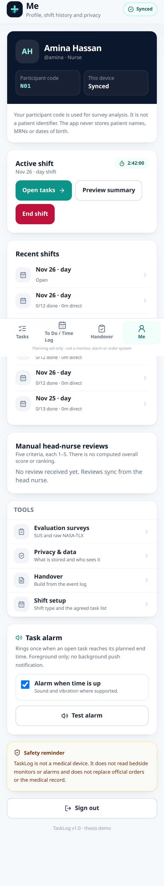
Foreground task alarm: on/off toggle, Test alarm button. When an open task reaches its planned end, the app beeps (Web Audio) and vibrates where supported, with a persistent overdue badge. Foreground only — background push is out of scope.
Test alarm feedback
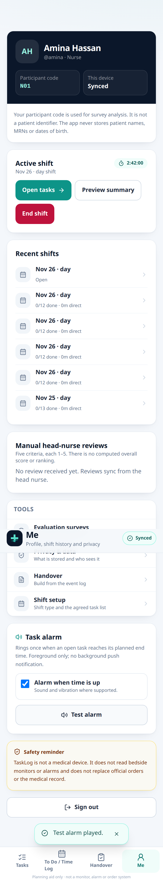
Test alarm plays the beep and shows confirmation feedback. Audio is unlocked by the first user gesture (tap/key press).
7. Nurse: Summary & Shift End (/summary)
Summary — no active shift
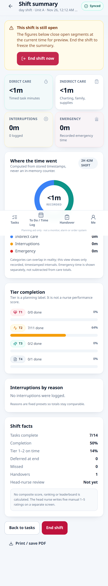
When no shift is active, the summary page prompts the user to start a shift.
End shift confirmation
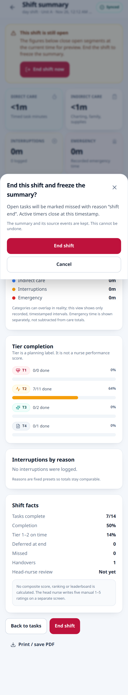
Confirming shift end marks all remaining planned/in-progress/paused tasks as missed and freezes the timestamp-based summary.
Shift ended
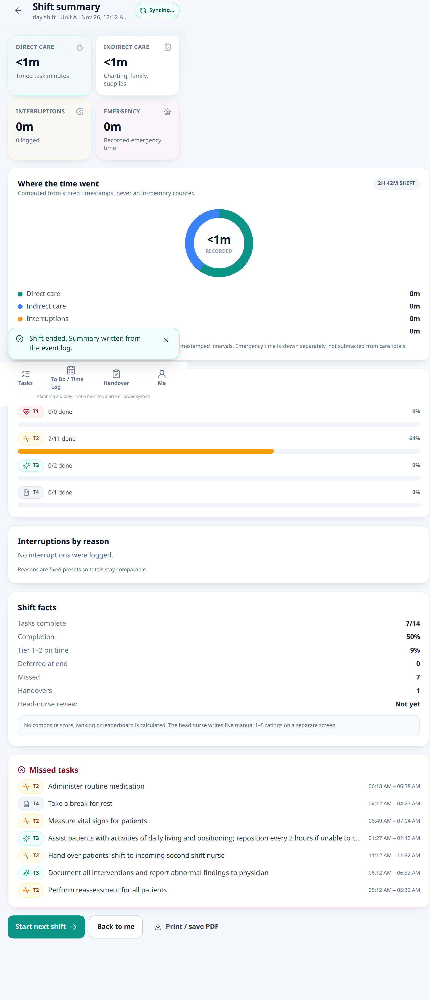
Final summary shows done/missed counts, durations computed from stored timestamps, and the shift is preserved as read-only history. The next shift starts with a fresh 12-task plan.
8. Head Nurse
Fast head-nurse login redirect
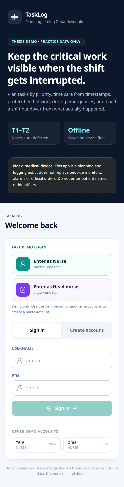
One-tap Enter as Head nurse (Layla · 9999) redirects to the head-nurse unit dashboard.
Unit dashboard

Head-nurse dashboard showing unit-level metrics, tier 1–2 on-time rate, completion rate, and direct/indirect care minutes.
Shift list
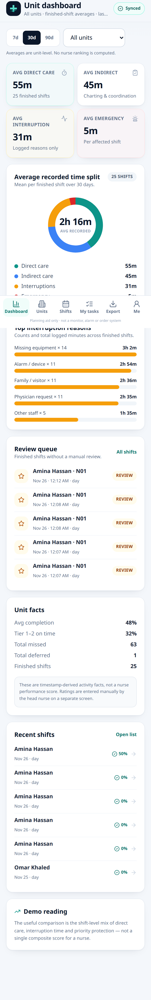
List of all shifts with unit, status, and review state. Head-nurse shifts are excluded from nurse analytics and CSV export.
My tasks — head-nurse own shift

Separate head-nurse shift with the exact 14-task list. Online-only — head-nurse task management requires the API.
Units management
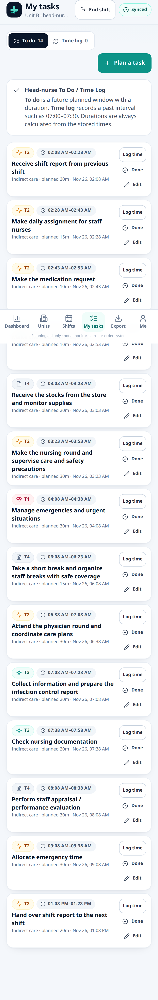
Create units, assign nurses to units, and manage unit status. Nurse assignment determines which shifts a nurse can start.
Five manual 1–5 ratings
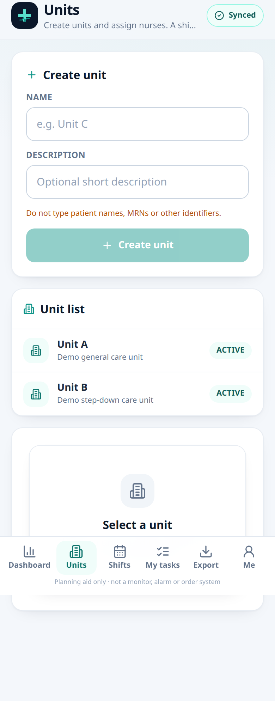
Head-nurse ratings are five manual 1–5 criteria. No computed performance score, ranking, or leaderboard.
CSV export
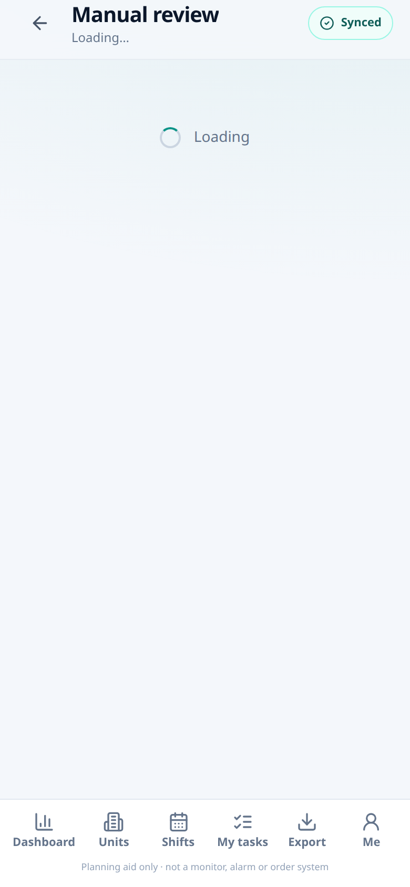
Export shift data to CSV with unit columns. Can filter by unit. Nurse shifts and head-nurse shifts are separate exports.
Shift detail & event timeline
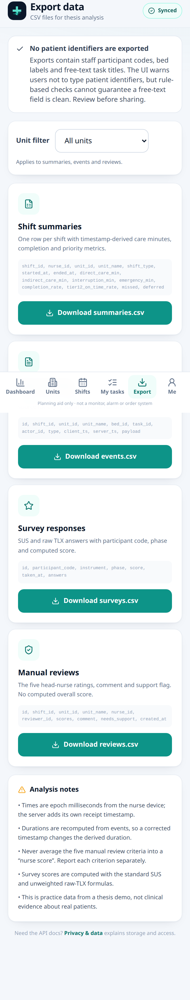
Shift detail shows the full event timeline (shift started, tasks created, tasks edited, time logged, shift ended). Null event IDs are normalized for reduction.
Shift detail & event timeline (continued)
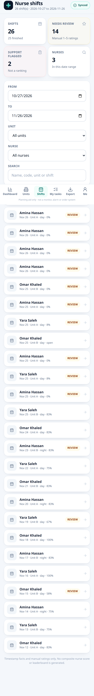
Head-nurse shift detail page showing the shift's full event timeline and task states.
9. Public
Privacy & data notice

Persistent disclaimer visible throughout: not a medical device, no patient identifiers (names, MRNs, DOB, photos), beds are number + nickname only, rule-based logic only, no AI/ML.